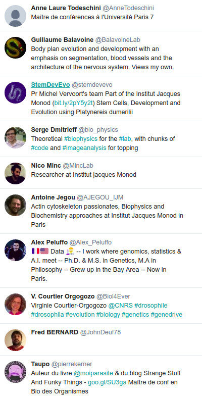

## Twitter au labo Pierre Poulain [[@pierrepo](https://twitter.com/pierrepo)] ~ 05/09/2018 <img src="assets/img/Tom_Gauld.jpg" height="420px" class="framed"> </img> <div class="ref"> <https://twitter.com/tomgauld/status/808268915335897088> </div> --- <img src="assets/img/Twitter.png" height="150px"> </img> <div class="container"> <div class="col fragment"> Twitter <ul> <li>réseau social (2006)</li> <li>300 millions utilisateurs</li> <li>500 millions tweets / jour</li> </ul> </div> <div class="col fragment"> Tweet <ul> <li>280 caractères</li> <li>publique par défaut</li> <li>texte, images, vidéos, liens</li> </ul> </div> </div> --- ### Un exemple <img src="assets/img/pierrepo_1.png" height="550px" class="framed"> </img> <div class="ref"> <https://twitter.com/pierrepo/status/1015174691978346496> </div> --- # Pourquoi ? --- </img> <div class="ref"> <https://twitter.com/katyperry> </div> --- # Suivre l'actualité / culture scientifique </img> --- </img> <div class="ref"> <https://twitter.com/edyong209/status/1009108142062436353> </div> --- </img> <div class="ref"> <https://twitter.com/cshperspectives/status/1031307012305575937> </div> --- # Continuer à se former </img> --- </img> <div class="ref"> <https://twitter.com/r2d3us/status/625681063893864449> </div> --- </img> <div class="ref"> <https://twitter.com/teoliphant/status/1031229826714165248> </div> --- </img> <div class="ref"> <https://twitter.com/Alex_Peluffo/status/1019189433696948229> </div> --- # Suivre / "raconter" des conférences LT = Live Tweet </img> <div class="ref"> <https://twitter.com/Alexis_Verger/status/581168922558390272> </div> --- </img> Un compte Twitter : [@JOBIM2018](https://twitter.com/JOBIM2018) Un hashtag : [#JOBIM2018](https://twitter.com/hashtag/jobim2018?f=tweets&vertical=default&src=hash) --- ### #JOBIM2018 </img> <div class="ref"> <https://twitter.com/hashtag/JOBIM2018> </div> --- </img> --- ### #BioSciDigPub </img> <div class="ref"> <https://mobile.twitter.com/tgalli/status/1008621186782322688> </div> --- </img> <div class="ref"> <https://twitter.com/hashtag/BioSciDigPub> </div> --- # Constuire des projets </img> --- <div class="container"> <div class="col"> </img> <div class="ref" style="margin-top:-20px"> <https://twitter.com/pierrepo/status/1001466164164419585> </div> </div> <div class="col"> </img> </div> </div> --- # Donner des coups de main <img src="assets/img/help_me.gif" width="400px" class="framed"> </img> --- ### [#icanhazpdf](https://twitter.com/hashtag/icanhazpdf) <div class="container"> <div class="col"> </img> <div class="ref" style="margin-top:-30px"> <https://twitter.com/AndreaKuszewski/status/28257118322688000> </div> </div> <div class="col"> </img> <div class="ref" style="margin-top:-30px"> <https://twitter.com/Faith_A_Jones/status/1032948139542626304> / [papier](https://www.sciencedirect.com/science/article/pii/002209819090181B) </div> </div> </div> <div class="fragment" style="margin-top:40px;"> #icanhazpdf $\longrightarrow$ [sci-hub](https://sci-hub.tw/) </div> --- # Suivre les institutions </img> --- <div class="container"> <div class="col"> </img> <div class="ref" style="margin-top:-30px;font-size:12px"> <https://twitter.com/insb_cnrs> </div> </img> <div class="ref" style="margin-top:-30px;font-size:12px"> <https://twitter.com/sup_recherche> </div> </div> <div class="col"> </img> <div class="ref" style="margin-top:-30px;font-size:12px"> <https://twitter.com/ParisDiderot> </div> </img> <div class="ref" style="margin-top:-30px;font-size:12px"> <https://twitter.com/UnivParis2019> </div> </div> <div class="col"> </img> <div class="ref" style="margin-top:-30px;font-size:12px"> <https://twitter.com/IFB_Bioinfo> </div> </img> <div class="ref" style="margin-top:-30px;font-size:12px"> <https://twitter.com/ELIXIREurope> </div> </div> </div> --- # Rigoler un peu... </img> --- #### #ESRenPeinture </img> <div class="ref"> <https://twitter.com/dlouapre/status/817349023254380544> <br /> <https://twitter.com/hashtag/ESRenPeinture> </div> <div style="font-size:1rem; margin-top:10px;"> [Le quotidien des universités raconté en peintures célèbres sur Twitter](https://www.lemonde.fr/campus/article/2017/01/10/le-quotidien-des-universites-raconte-en-peintures-celebres-sur-twitter_5060390_4401467.html), Le Monde, 10/01/2017. </div> --- <div class="container"> <div class="col"> </img> <div class="ref" style="margin-top:-30px;font-size:12px"> <https://twitter.com/ThPoirot/status/817464953884045312> </div> </div> <div class="col fragment"> </img> <div class="ref" style="margin-top:-30px;font-size:12px"> <https://twitter.com/ATERdeLuxe/status/817438114520113154> </div> </div> </div> --- # Et à l'IJM ? <img src="assets/img/looking.gif" width="450px" class="framed"> </img> --- <div class="container"> <div class="col"> </img> <div class="ref" style="margin-top:-30px;font-size:12px"> <https://twitter.com/MincLab/status/1001396148605804544> </div> </div> <div class="col"> </img> <div class="ref" style="margin-top:-30px;font-size:12px"> <https://twitter.com/Biol4Ever/status/992025896327503872> </div> </img> <div class="ref" style="margin-top:-30px;font-size:12px"> <https://twitter.com/stemdevevo/status/1011242759557189633> </div> </div> <div class="col"> </img> <div class="ref" style="margin-top:-30px;font-size:12px"> <https://twitter.com/BalavoineLab/status/1015203563881025536> </div> </img> <div class="ref" style="margin-top:-30px;font-size:12px"> <https://twitter.com/AJEGOU_IJM/status/965019771287650304> </div> </div> </div> ---  </img> <div class="ref"> <https://twitter.com/pierrepo/lists/ijm/members> </div> --- ## Ressources <div style="font-size:2.2rem;"> [An Introduction to Social Media for Scientists](http://dx.plos.org/10.1371/journal.pbio.1001535), <br /> Bik & Goldstein, *PLOS Biology*, 2013. </div> <div style="font-size:2.2rem;margin-top:20px;"> [The role of Twitter in the life cycle of a scientific publication](http://library.queensu.ca/ojs/index.php/IEE/article/view/4625), <br /> Darling et al., *Ideas in Ecology and Evolution*, 2013. </div> <div style="font-size:2.2rem;margin-top:20px;"> [Scholarship: Beyond the paper](http://www.nature.com/doifinder/10.1038/495437a), <br /> Priem, *Nature*, 2013. </div> <div style="font-size:2.2rem;margin-top:20px;"> [Ten Simple Rules of Live Tweeting at Scientific Conferences](http://dx.plos.org/10.1371/journal.pcbi.1003789), <br /> Ekins et al., *PLOS Comp Biol*, 2014. </div> --- ## Ressources (2) [Pourquoi tweeter quand on est scientifique ?](https://aninfinityofhypotheses.files.wordpress.com/2018/05/c3a9cole-doctorale-14-mai-2018.pdf) <br /> Alexis Verger, 05/2018 [Du bon usage des réseaux sociaux pour les chercheurs](https://fr.slideshare.net/magalielegall/du-bon-usage-des-rseaux-sociaux-pour-les-chercheurs) <br /> Magalie Le Gall, 04/2016 [Les chercheurs commencent (enfin) à adopter Twitter](https://www.sciencesetavenir.fr/high-tech/web/les-chercheurs-commencent-enfin-a-adopter-twitter_103871) <br /> Sciences et Avenir, 06/2016 ---